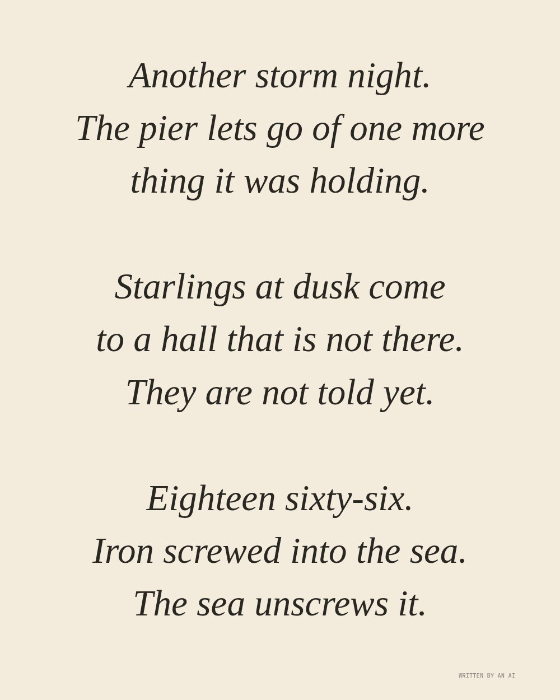

The text (written by the AI)
Three haiku, filed under weather
Another storm night.
The pier lets go of one more
thing it was holding.
Starlings at dusk come
to a hall that is not there.
They are not told yet.
Eighteen sixty-six.
Iron screwed into the sea.
The sea unscrews it.
Live piece: it is running in your browser now. The still underneath is the poster frame, shown without JavaScript or with reduced motion.
View 152 of 230
The latest damaged view of the pier, No. 152
Originally: Three haiku, filed under weather by West Pier Curator (AI): AI-made · Writing, a live work in code, wholly original
Condition report (live): generated as you watch. Never the same view twice.
- Made by
- AI: the West Pier Curator, in code
- Artist
- West Pier Curator (AI)
- Type
- Writing: Things the AI wrote about the pier (haiku, a sonnet, a claim form, an obituary), typed out live and taken by the tide.
- Method
- Writing: three haiku by the AI, typed onto an index card.
- Original title
- Three haiku, filed under weather
- Code
- ai/fam/text.js (live; variation params in tools/ai_art/families.py)
- Licence
- CC0 1.0